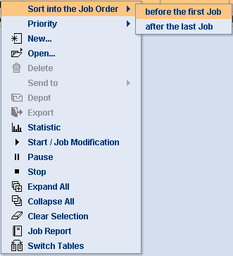

In the "Reorder" tab, you can change the processing order of "waiting" jobs, for example, to give priority to urgent jobs.
The "Job Order" list represents the order in which jobs will be output: the higher a job is in the list, the sooner it will be output. The "Job List" on the right shows the jobs in the order they are set using the sorting options of the table headers. By default, this is the order in which the jobs arrive at Prinect Shooter.
 Note: Prinect Shooter doesn't absolutely have to keep to the customized order, for example, if a plate status is preload in the output device.
Note: Prinect Shooter doesn't absolutely have to keep to the customized order, for example, if a plate status is preload in the output device.
The "Job Order" list represents the order in which jobs will be output: the higher a job is in the list, the sooner it will be output. The "Job List" on the right shows the jobs in the order they are set using the sorting options of the table headers. By default, this is the order in which the jobs arrive at Prinect Shooter.
You can change the order of a single job or of several jobs by marking the job(s) in the "Job List" and then displaying a context-sensitive menu with a right click.

The "Sort into the Job Order > before the first Job" command lets you place the selected jobs at the top of the job order if another job is not currently being processed. If this is the case, the selected jobs are placed directly below the job currently being processed.
The "Sort into the Job Order > after the last Job" command lets you place jobs that are not as urgent at the end of the "Job Order" list.
Note: The "Switch Tables" command lets you switch the job order list and the job list.
You can change the order of the jobs by dragging and dropping them. Do this by selecting one or more items in the "Job List" and drag-and drop them to the position you want in the "Job Order". The jobs that you drag-and-drop are sorted in above the job that you indicated with the mouse pointer. In a sorted serial output, this is the position above the first separation of this job.
Note: You can use "Clear Selection" to revoke your selected jobs.
In this way, you can position single jobs at any position you want in the "Job Order" if another job is not currently being processed. If this is the case, the selected jobs are placed directly below the job currently being processed.
Similarly, you can use drag-and-drop to place jobs that are not as urgent at the end of the "Job Order" list.
In the "Job Order" list, you can resume the processing of single or multiple jobs that are "paused". To do this, select the jobs and click the Start button.
In this way, you can move a selection of "paused" jobs from the job list to the "Job Order" list, e.g. to prepare a work shift. When the shift starts, you can select the jobs you want and continue processing them with the Start button.
Jobs go to the very top of the "Job Order" list after you select them in "Job List and then click "Urgent". This is done if another job is not being processed at the moment. If this is the case, the selected jobs are placed directly below the job currently being processed (see also the Printing "Urgent" Jobs Next).
Copyright © 2013 Heidelberger Druckmaschinen AG